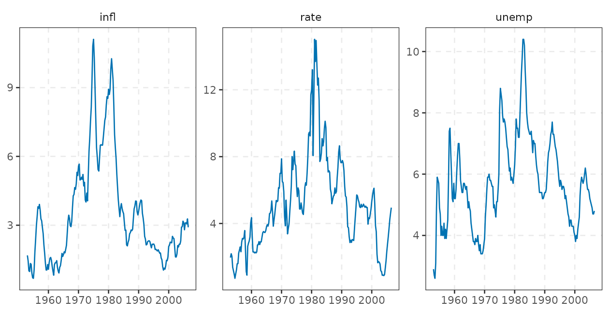
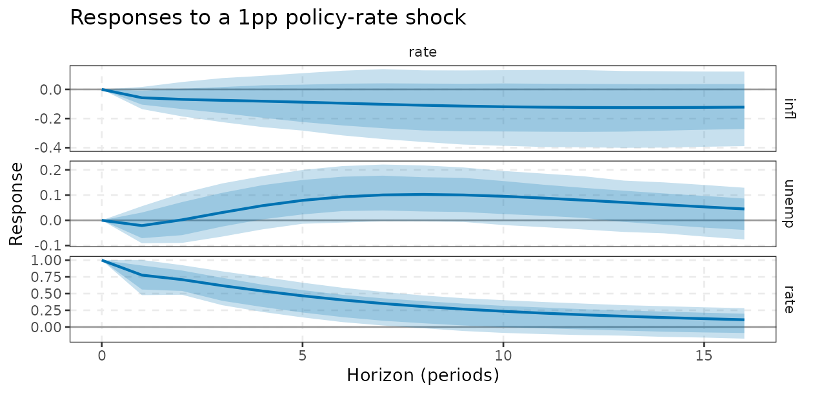
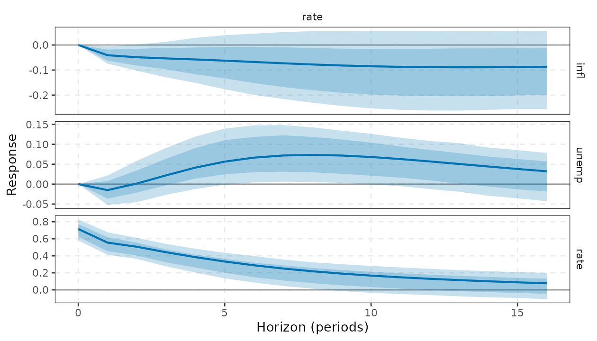
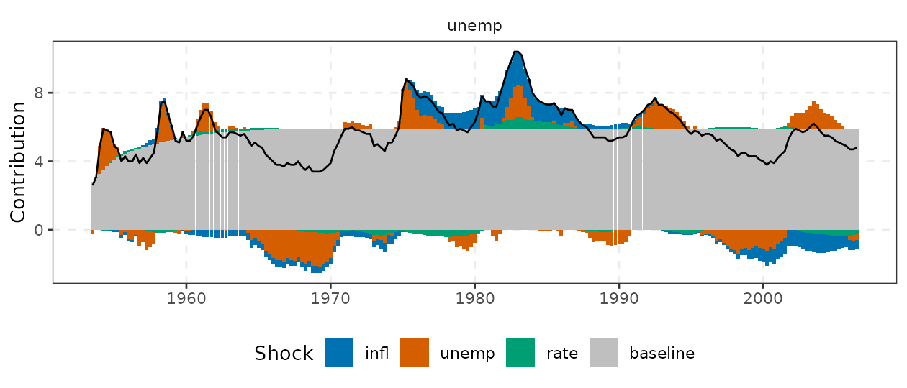
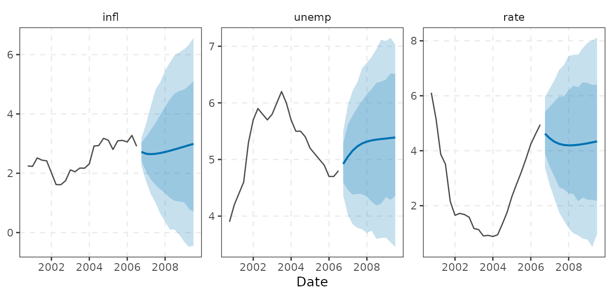
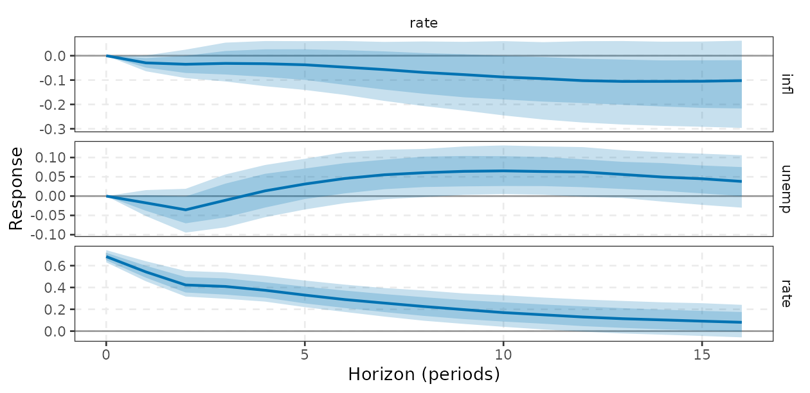
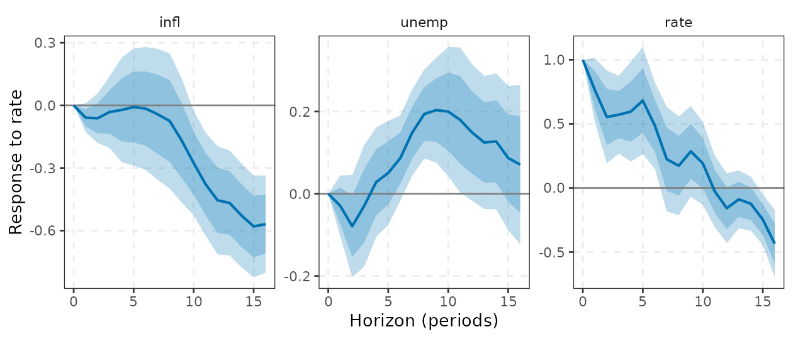
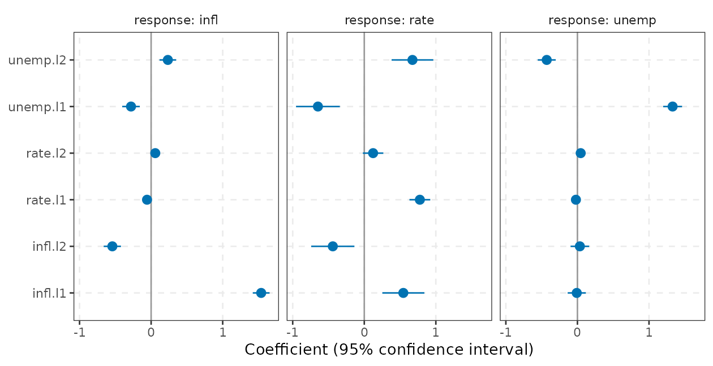
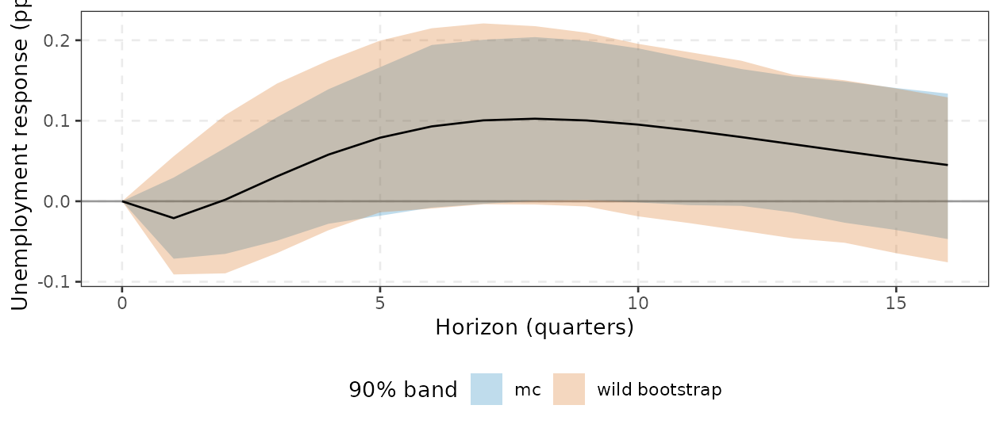

varm estimates reduced-form and structural VARs,
Bayesian VARs (Minnesota, sum-of-coefficients, hierarchical, stochastic
volatility, shrinkage priors), time-varying-parameter VARs and local
projections, with a compiled (RcppArmadillo) engine. This tour takes
about ten minutes and follows the workflow of a typical applied
project:
- data, 2. lag choice, 3. estimation, 4. stability, 5. impulse responses with bands, 6. variance decomposition, 7. historical decomposition, 8. forecasts,
- a Bayesian VAR in three lines, 10. a local projection in three lines,
- the tidy workflow: tibbles into
ggplot2.
The API follows tidy-tools conventions. Variables are selected with
tidyselect (vars = c(infl, rate),
shocks = rate), results convert to tibbles with
tidy(), glance() and augment(),
and every result has an autoplot() method that returns an
ordinary ggplot2 object you can extend with
+ labs(), + theme_varm() or any other
layer.
Every object returned by irf(), fevd(),
hd() and forecast() is built from the same
currency, a set of reduced-form parameter draws (draws()),
so the frequentist (bootstrap) and Bayesian code paths share one
interface.
1. Data
yraw holds three quarterly US series from the
Koop-Korobilis data set (1953Q1 to 2006Q3): inflation
(infl), the unemployment rate (unemp) and a
short-term interest rate (rate). We add a Date
column. varm() drops non-numeric columns from the
estimation but keeps a Date column as the time axis of the
plots.
y <- yraw
y$date <- seq(as.Date("1953-01-01"), by = "quarter", length.out = nrow(y))
dim(yraw)
#> [1] 215 3
long <- do.call(rbind, lapply(c("infl", "unemp", "rate"), function(v) {
data.frame(date = y$date, variable = v, value = y[[v]])
}))
ggplot(long, aes(date, value)) +
geom_line(colour = varm_palette(1)) +
facet_wrap(vars(variable), scales = "free_y") +
labs(x = NULL, y = NULL) +
theme_varm()
varm() accepts a data frame (preferred), a matrix or a
ts. Use vars = to pick the endogenous
variables with tidyselect, for example
varm(y, p = 2, vars = c(infl, rate)) for a bivariate
system. All three series are persistent levels; we keep them in levels,
which is standard for a VAR used for dynamics and forecasting (see
vignette("var-theory"), “Reduced-form VAR: theory,
inference and use”, for when this is and is not appropriate).
2. Lag choice
var_select() evaluates AIC, Hannan-Quinn (HQ), Schwarz
(SC) and the (log) final prediction error (FPE) for
on a common sample.
sel <- var_select(yraw, pmax = 8)
sel$selection
#> AIC HQ SC FPE
#> 6 2 2 6AIC and FPE favour long lags, HQ and SC pick . We take two lags as a parsimonious baseline.
3. Estimation
fit <- varm(y, p = 2)
fit
#> <varm> VAR(2) with 3 variables, 213 effective observations
#> logLik = -338.416; max |eigenvalue| = 0.946
#>
#> infl unemp rate
#> infl.l1 1.5378 -0.0095 0.5457
#> unemp.l1 -0.2809 1.3297 -0.6475
#> rate.l1 -0.0571 -0.0210 0.7766
#> infl.l2 -0.5418 0.0341 -0.4395
#> unemp.l2 0.2336 -0.4290 0.6730
#> rate.l2 0.0580 0.0457 0.1232
#> const 0.2872 0.3654 0.0052The tibble summaries are the quickest way to read a fit:
tidy() is the coefficient table (one row per equation and
regressor), glance() the one-row model summary and
augment() the data with fitted values and residuals.
co <- tidy(fit, conf.int = TRUE)
co[co$response == "rate", ]
#> # A tibble: 7 × 8
#> response term estimate std.error statistic p.value conf.low conf.high
#> <chr> <chr> <dbl> <dbl> <dbl> <dbl> <dbl> <dbl>
#> 1 rate infl.l1 0.546 0.149 3.66 3.16e- 4 0.252 0.839
#> 2 rate unemp.l1 -0.647 0.155 -4.17 4.47e- 5 -0.954 -0.341
#> 3 rate rate.l1 0.777 0.0738 10.5 5.19e-21 0.631 0.922
#> 4 rate infl.l2 -0.440 0.153 -2.87 4.52e- 3 -0.741 -0.138
#> 5 rate unemp.l2 0.673 0.148 4.55 9.03e- 6 0.382 0.964
#> 6 rate rate.l2 0.123 0.0726 1.70 9.10e- 2 -0.0198 0.266
#> 7 rate const 0.00517 0.238 0.0217 9.83e- 1 -0.465 0.475
glance(fit)
#> # A tibble: 1 × 8
#> K p nobs logLik AIC BIC HQ max_root
#> <int> <int> <int> <dbl> <dbl> <dbl> <dbl> <dbl>
#> 1 3 2 213 -338. 731. 822. 768. 0.946
augment(fit)
#> # A tibble: 215 × 10
#> date infl unemp rate .fitted_infl .resid_infl .fitted_unemp
#> <date> <dbl> <dbl> <dbl> <dbl> <dbl> <dbl>
#> 1 1953-01-01 1.69 2.9 1.96 NA NA NA
#> 2 1953-04-01 1.45 2.7 2.19 NA NA NA
#> 3 1953-07-01 1.01 2.6 2.04 1.51 -0.498 2.80
#> 4 1953-10-01 0.981 3.1 1.38 0.969 0.0114 2.76
#> 5 1954-01-01 1.33 4.9 1.18 1.02 0.309 3.46
#> 6 1954-04-01 1.30 5.9 0.97 1.17 0.131 5.61
#> 7 1954-07-01 0.909 5.8 0.72 1.06 -0.151 6.17
#> 8 1954-10-01 0.709 5.7 0.98 0.747 -0.0373 5.61
#> 9 1955-01-01 0.685 4.9 1.22 0.625 0.0593 5.49
#> 10 1955-04-01 1.06 4.7 1.59 0.898 0.165 4.47
#> # ℹ 205 more rows
#> # ℹ 3 more variables: .resid_unemp <dbl>, .fitted_rate <dbl>, .resid_rate <dbl>fit$B is the
coefficient matrix (lags first, then constant; one column per equation),
fit$Sigma the residual covariance (degrees-of-freedom
corrected), resid(fit) the residuals, and
lag_matrices() the
array of lag matrices.
s <- summary(fit)
round(s$r.squared, 3)
#> infl unemp rate
#> 0.983 0.949 0.928
round(lag_matrices(fit)[, , 1], 3)
#> infl unemp rate
#> infl 1.538 -0.281 -0.057
#> unemp -0.010 1.330 -0.021
#> rate 0.546 -0.647 0.777summary(fit) prints the full equation-by-equation
tables. Standard errors are OLS standard errors with covariance
.
For Wald and Granger tests and residual diagnostics (which start from
augment(fit)), see Sections 4-5 of
vignette("var-theory").
4. Stability
A VAR is stationary if all eigenvalues of the companion matrix lie
inside the unit circle. stability() returns their
moduli.
The largest modulus (0.95, also max_root in
glance(fit)) is close to one: typical for macro levels, and
a reminder that long-horizon results are sensitive to small changes in
persistence.
5. Impulse responses with bands
irf() defaults to a recursive (Cholesky) identification
in the column order of the data (infl, unemp,
rate) and a residual bootstrap with 68% and 90% bands. The
rate is ordered last, so it is the “monetary policy” shock that responds
to inflation and unemployment on impact but does not affect them on
impact. Other identification schemes (long-run, sign restrictions,
proxies, heteroskedasticity) are in
vignette("identification"), “Structural identification:
from Cholesky to proxies and sign restrictions”. To choose a different
order, use tidyselect:
id_chol(order = c(rate, infl, unemp)).
ir <- irf(fit, horizon = 16, nboot = 500) # bootstrap, Cholesky
ir
#> <varm IRF> K = 3, horizon 0..16, id = chol, bands: 68%/90%The point estimate is in $estimate (response x shock x
horizon, horizon 0 = impact), bands in $bands (response x
shock x horizon x quantile), and tidy() gives the same
information as a tibble with columns response,
shock, horizon, estimate and, for
each band, level, conf.low and
conf.high. normalise_to() rescales a shock,
for example to a one percentage point rise in the rate, and
cumulative accumulates responses of variables entered in
differences. Use ci = "wild" if residual volatility changes
over time (it does here: the Great Moderation), "mc" for
fast asymptotic bands, and ci = "none" for point estimates
only.
ir1 <- irf(fit, horizon = 16, ci = "wild", nboot = 500,
normalise = normalise_to(rate, rate, 1))
autoplot(ir1, shocks = rate) +
labs(title = "Responses to a 1pp policy-rate shock") +
theme_varm()
autoplot(ir) draws a response-by-shock grid as a
ggplot2 object (rows: responding variable, columns: shock)
and takes tidyselect shocks = and responses =
arguments to subset. plot(ir) is a thin wrapper that prints
the same plot.
autoplot(ir, shocks = rate)
The shaded areas are the 90% (light) and 68% (dark) pointwise bands: after a policy-rate shock, the rate decays slowly (own-persistence of about 0.9 per quarter), unemployment rises with a lag, and inflation moves little and with wide uncertainty.
6. Forecast error variance decomposition
fv <- fevd(fit, horizon = 16, ci = "none")
round(fv$estimate[, , 17], 2) # rows: variable, columns: shock, horizon 16
#> shock
#> response infl unemp rate
#> infl 0.82 0.16 0.02
#> unemp 0.27 0.69 0.03
#> rate 0.40 0.26 0.34Each row sums to one. At horizon 16, about 80% of the forecast-error
variance of inflation comes from its own shock, whereas the rate is
explained roughly 40% by inflation shocks and 26% by unemployment
shocks. Bands for FEVDs (fevd(fit) with a bootstrap) are
wide, since they are ratios of squared IRFs.
7. Historical decomposition
hd() splits the observed path into a baseline
(deterministic part and initial conditions) and the contributions of
each structural shock. autoplot() stacks the contributions
as columns and draws the actual series as a line; tidy()
returns the long table (time, response,
shock, contribution, actual).
h <- hd(fit)
dim(h$contributions) # time x variable x shock
#> [1] 213 3 3
max(abs(h$actual - h$baseline - apply(h$contributions, c(1, 2), sum))) # exact identity
#> [1] 4.440892e-16
autoplot(h, responses = unemp)
8. Forecasts
forecast() iterates the VAR forward. The default bands
are predictive: they combine parameter draws (asymptotic Monte Carlo)
with simulated future shocks.
fc <- forecast(fit, h = 12, nboot = 500)
round(fc$mean[c(1, 4, 8, 12), ], 2)
#> infl unemp rate
#> [1,] 2.72 4.92 4.62
#> [2,] 2.66 5.23 4.25
#> [3,] 2.80 5.35 4.22
#> [4,] 2.99 5.39 4.34
autoplot(fc, n_history = 24)
9. A Bayesian VAR in three lines
bvarm() fits a conjugate Normal-inverse-Wishart VAR with
a Minnesota prior (shrinking towards a random walk in levels). The
result plugs into the same irf(), fevd(),
hd() and forecast() generics, now with
posterior bands. The MCMC sizes below are deliberately small to keep
this document fast; use thousands of draws in practice.
b <- bvarm(y, p = 4, prior = prior_minnesota(), ndraw = 500, nburn = 200)
ib <- irf(b, horizon = 16)
round(ib$estimate[, "rate", c(1, 5, 9, 17)], 3)
#> h
#> response 0 4 8 16
#> infl 0.000 -0.033 -0.069 -0.102
#> unemp 0.000 0.014 0.061 0.038
#> rate 0.683 0.374 0.225 0.081
autoplot(ib, shocks = rate)
Hierarchical priors (prior_minnesota(hyper = "full")),
stochastic volatility (bvarm(sv = TRUE)), triangular
samplers (prior_triangular()) and are covered in
vignette("bayesian-var"), “Bayesian VARs: priors, samplers
and diagnostics”. Time-varying-parameter VARs (tvpvar())
are in vignette("tvp-var"), “Time-varying-parameter VARs
with stochastic volatility”.
10. A local projection in three lines
lp() estimates the impulse response directly, with one
regression per horizon and Newey-West standard errors, with no dynamic
model to get wrong.
l <- lp(y, shock = rate, horizon = 16, lags = 2, contemp = c(infl, unemp))
round(l$estimate[c(1, 5, 9, 17), ], 3) # horizon x response; a unit shock to the rate
#> infl unemp rate
#> 0 0.000 0.000 1.000
#> 4 -0.022 0.028 0.596
#> 8 -0.075 0.194 0.174
#> 16 -0.569 0.071 -0.435l$estimate is a horizon-by-response matrix for a
one-unit shock to rate, with l$bands and
l$se alongside. With contemp equal to the
variables ordered before the shock, this is the local-projection
analogue of the Cholesky VAR response; compare it with
irf(fit, normalise = normalise_to(rate, rate, 1)).
autoplot(l) plots the projection and tidy(l)
returns horizon, response,
estimate, std.error and band columns.
autoplot(l)
See vignette("local-projections"), “Local projections
and the LP versus VAR trade-off”, for instrumental-variable LPs,
simultaneous (sup-t) bands and the comparison with VARs, and
vignette("lp-advanced"), “Advanced local projections: state
dependence, smoothing, panels, joint inference and forecasting”.
11. The tidy workflow
Everything above returns tibbles on request, so summaries and custom
graphics need no special tools. Two examples. First, a coefficient plot
from tidy(fit) with ggplot2, using the
confidence limits that conf.int = TRUE adds:
co <- co[co$term != "const", ]
ggplot(co, aes(estimate, term)) +
geom_vline(xintercept = 0, colour = "grey60") +
geom_pointrange(aes(xmin = conf.low, xmax = conf.high), colour = varm_palette(1)) +
facet_wrap(vars(response), labeller = label_both) +
labs(x = "Coefficient (95% confidence interval)", y = NULL) +
theme_varm()
Second, tidy(irf) into a hand-built plot. The bands are
stacked in rows, one per level; the point estimate repeats
on each of them. Here we compare the wild bootstrap (ir1
above) with the asymptotic bands for the response of unemployment to the
1pp rate shock, and summarise the peak response:
ir_mc <- irf(fit, horizon = 16, ci = "mc", nboot = 500,
normalise = normalise_to(rate, rate, 1))
both <- rbind(
cbind(tidy(ir1), method = "wild bootstrap"),
cbind(tidy(ir_mc), method = "mc")
)
u <- both[both$response == "unemp" & both$shock == "rate" & both$level == 0.9, ]
ggplot(u, aes(horizon, estimate)) +
geom_hline(yintercept = 0, colour = "grey60") +
geom_ribbon(aes(ymin = conf.low, ymax = conf.high, fill = method), alpha = 0.25) +
geom_line() +
scale_fill_manual(values = varm_palette(2)) +
labs(x = "Horizon (quarters)", y = "Unemployment response (pp)", fill = "90% band") +
theme_varm()
# peak response and its horizon, from the same tibble
pk <- u[u$method == "wild bootstrap", ]
pk[which.max(pk$estimate), c("horizon", "estimate", "conf.low", "conf.high")]
#> horizon estimate conf.low conf.high
#> 80 8 0.1025438 -0.004052864 0.2175228The same pattern works for tidy(fc) (forecasts),
tidy(h) (historical decomposition), tidy(l)
(local projections) and tidy(b) (Bayesian posterior
summaries); glance() gives one-row summaries
(glance(fit), glance(b)). The outputs are
plain tibbles, so base R (aggregate(),
split()) and dplyr verbs work on them directly.
Where to go next
| You want to … | Read |
|---|---|
| understand the reduced-form VAR, tests, diagnostics, bootstrap and forecasting |
vignette("var-theory"): Reduced-form VAR: theory,
inference and use |
| identify structural shocks: Cholesky, long-run, sign, zero/sign, proxy, heteroskedasticity |
vignette("identification"): Structural identification:
from Cholesky to proxies and sign restrictions |
| use priors, hierarchical shrinkage, stochastic volatility |
vignette("bayesian-var"): Bayesian VARs: priors,
samplers and diagnostics |
| let coefficients and volatilities drift over time |
vignette("tvp-var"): Time-varying-parameter VARs with
stochastic volatility |
| estimate responses without a VAR, with IV |
vignette("local-projections"): Local projections and
the LP versus VAR trade-off |
| state dependence, smoothing, panels, joint inference, LP forecasts |
vignette("lp-advanced"): Advanced local projections:
state dependence, smoothing, panels, joint inference and
forecasting |
| decide which method fits your problem |
vignette("choosing-a-method"): Choosing a method, and
where varm sits in the VAR ecosystem |
| see how the code was checked against reference implementations |
vignette("validation"): Validation report |
References
- Koop, G. and Korobilis, D. (2010). Bayesian multivariate time series methods for empirical macroeconomics. Foundations and Trends in Econometrics, 3(4), 267-358.
- Lütkepohl, H. (2005). New Introduction to Multiple Time Series Analysis. Springer.
- Kilian, L. and Lütkepohl, H. (2017). Structural Vector Autoregressive Analysis. Cambridge University Press.
- Jordà, Ò. (2005). Estimation and inference of impulse responses by local projections. American Economic Review, 95(1), 161-182.
- Sims, C. A. (1980). Macroeconomics and reality. Econometrica, 48(1), 1-48.